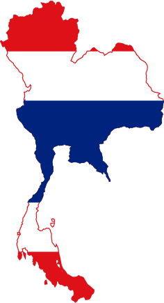

Highly motivated web developer who is able to provide full-stack solutions for websites and applications.
Over 10+ years of professional experience in HTML, CSS and JavaScript based solutions.
Well versed in modern software design principles, practices, and patterns utilizing Aurelia, Angular or other MVC based frameworks.
Always researching new technologies to deliver cutting edge content when needed and cut down development costs for large scale applications. Constant research allows forecasts to be made on how the website industry will change in the near future and how to best prepare an application to be ready for the next generation.
Works well in both team and individual settings and is able to manage a team to work towards a common goal. Being an all-round developer is also ideal for consulting and project management positions as the team can be advised on how to complete a project from start to finish using the correct technologies.
Studied social engineering at a Hotel and Cooking school to prepare for a degree in Tourism. Studying at a cooking school also gave me basic cooking skills in the French/Belgian culinary arts.
Onze Lieve Vrouw van Bijstand Kortrijk Belgium (1996-2000)Studied tourism with the idea of going into the tourism industry in Thailand after graduation, most notable areas of studies were History, Tourism, Dutch, English, French and German.
Vrije Technisch Instituut Kortrijk Belgium (1999-2000)Work as a web developer responsible for HTML, CSS, Javascript and PHP programming.
Web developer responsible for creating e-learning material and software.
Frontend development, mostly working with Flash and html, css, javascript for Philips related projects.
Frontend development : HTML5, JavaScript (jQuery) and CSS, mostly PSD to html and writing jquery widgets for Philips related projects.
Full-stack web and application development services.
Overview of some of the languages and frameworks i like working with.
Everybody needs HTML !
Styling the web
with CSS 2/3/4
EcmaScript 6/7 is the next generation of javascript and is my favorite way of writing code for the web.
I like to write back-end implementations in nodejs to have an isomorphic development experience.
Next-generation web framework for Node.js is a promising web framework i like to experiment with.
A robust back-end framework for Node.js that i use to create production ready back-ends.
Angular is a very popular framework for javascript that i like to use from time to time.
Aurelia is a very promising next-generation javascript framework that focuses on simplicity and cutting-edge technologies.
Symfony 3 is my framework of choice when the back-end has to be created with PHP.
Interested in hiring me ?
feel free to contact me for a more detailed CV
I am currently located in the Kingdom of Thailand.
